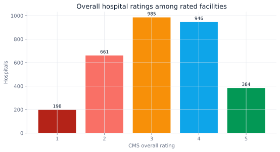
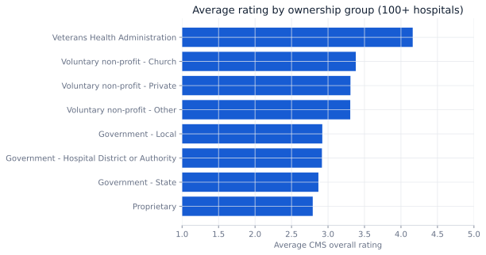

Decision brief
How should quality be compared when coverage is uneven?
The dataset contains 5,419 Medicare-registered hospitals, but only 3,174 have a numeric overall rating. A senior analysis must make that 58.57% coverage visible before ranking facilities.
Use a two-stage provider review: first separate rated from unrated facilities; then apply a transparent screen to rated hospitals and route missing or contradictory records to manual review.
Data model
Provider attributes, quality groups, and coverage flags
The facility is the analytical grain. Measures are organized into provider attributes, rating availability, mortality, safety, readmission, patient experience, and timely/effective care.
| Layer | Fields | Control |
|---|---|---|
| Provider dimension | Facility ID, type, ownership, location | Facility ID uniqueness |
| Rating fact | Overall rating, footnote | Numeric conversion + coverage flag |
| Measure groups | Better / no different / worse counts | Nonnegative and completeness checks |
| Screen | Rating ≥ 4, no safety-worse count, emergency services | Rule versioning and manual review |
Quality controls
Missing is a category, not a zero
All 5,419 Facility IDs are distinct at the dataset grain.
2,245 hospitals lack a numeric overall rating and are excluded from rating averages.
State and territory coverage is retained for monitoring and stratification.
The Arizona slice averages 3.11 among hospitals with numeric ratings.
Never coerce “Not Available” to zero. That would create a false low-performance signal and bias comparisons toward hospitals with more complete reporting.
Findings
Rating distributions require context

58.57% rating coverage means any league table should display its denominator and exclusion count.
The Spearman relationship between overall rating and count of worse safety measures is -0.162: directionally consistent, but weak.
Group averages can identify review segments, but they do not establish causal effects of ownership.
1,179 facilities meet the transparent high-quality screen for further validation—not automatic selection.

Screening logic
Transparent before sophisticated
CASE
WHEN overall_rating >= 4
AND safety_measures_worse = 0
AND emergency_services = 'Yes'
THEN 'high_quality_review'
WHEN overall_rating IS NULL
THEN 'coverage_review'
ELSE 'standard_review'
END AS review_queueThe rule is intentionally interpretable. A production version should add measure reliability, service-line fit, patient mix, access, and a formal governance review.
Operating actions
Make coverage and quality co-equal
Track rating availability by state, hospital type, and ownership before comparing performance.
Flag high overall ratings that coexist with worse safety or readmission counts.
Use the shortlist to prioritize due diligence, not to bypass clinical and network criteria.
Limitations
Descriptive provider data has boundaries
- Overall ratings summarize multiple measures and do not capture every clinical outcome.
- Missingness may be systematic; rated and unrated hospitals should not be assumed comparable.
- Facility comparisons do not adjust here for case mix, service availability, or local access constraints.
- The shortlist is an analytical triage tool, not a medical recommendation or contracting decision.